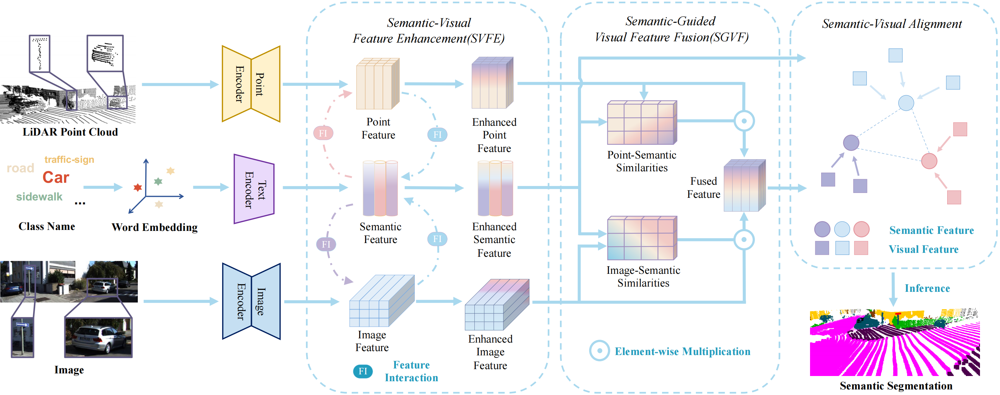
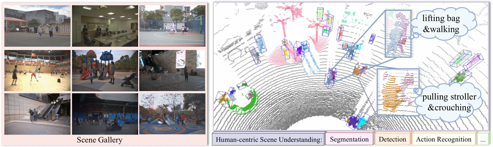
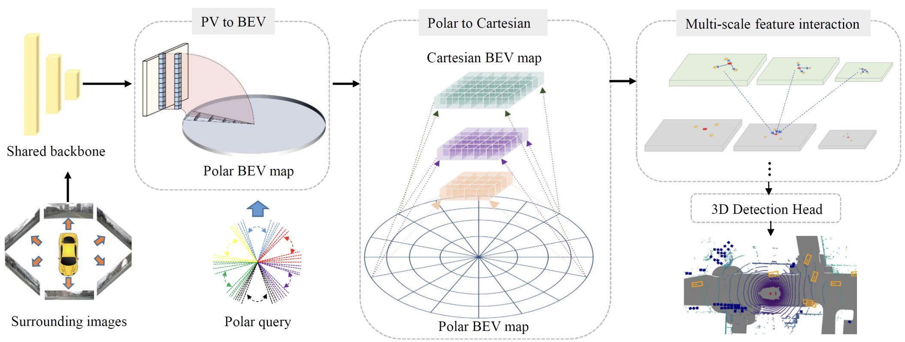
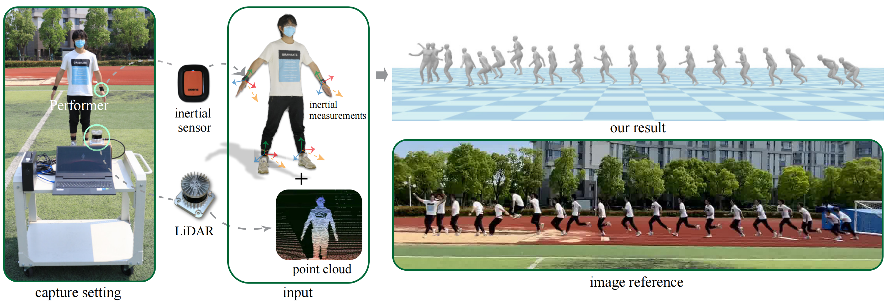
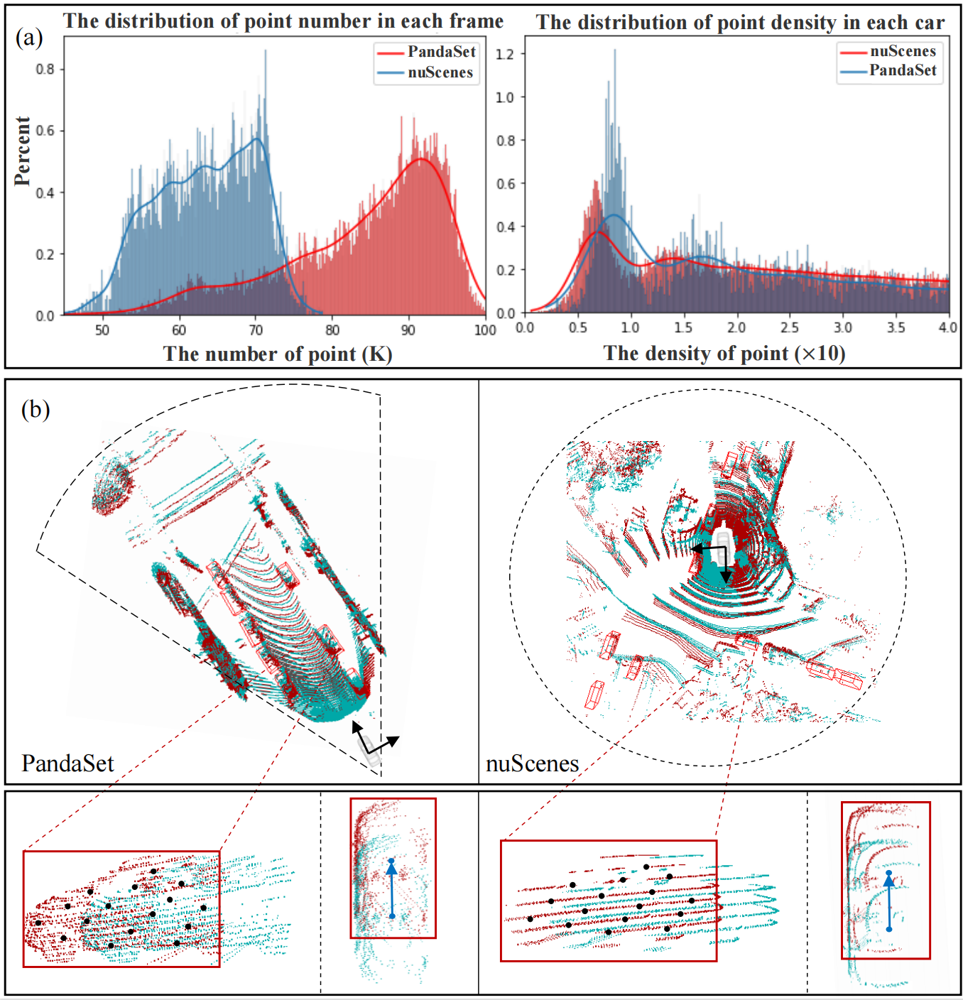
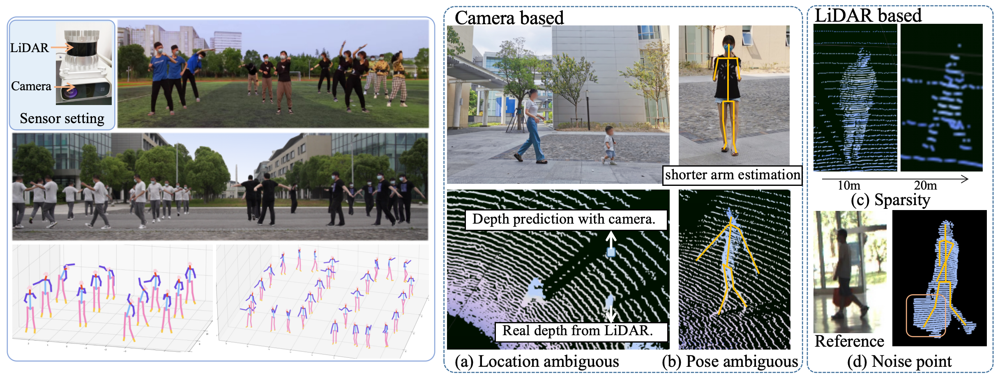
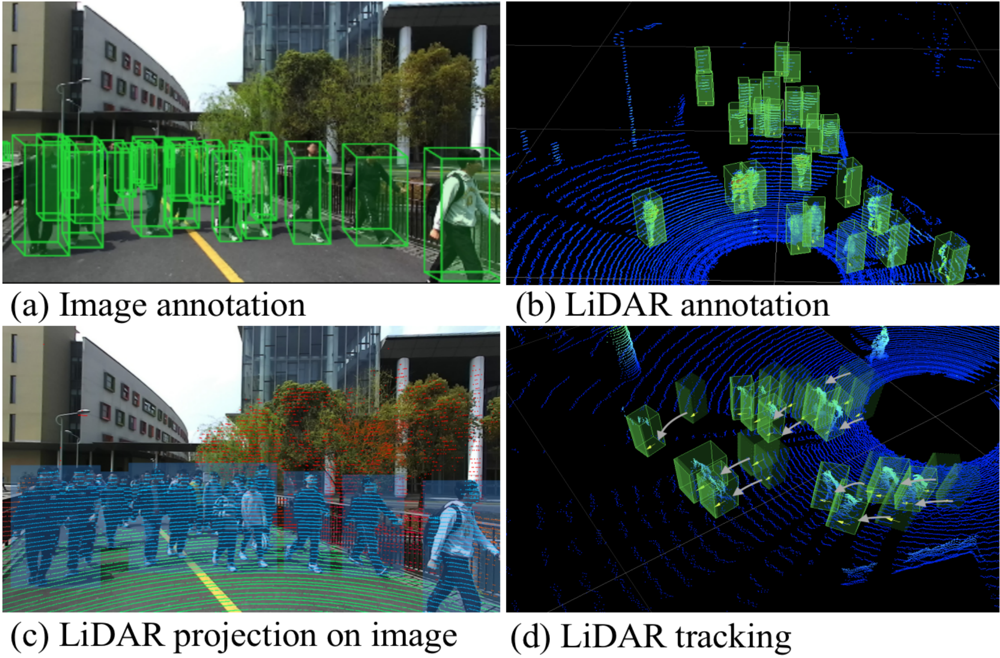
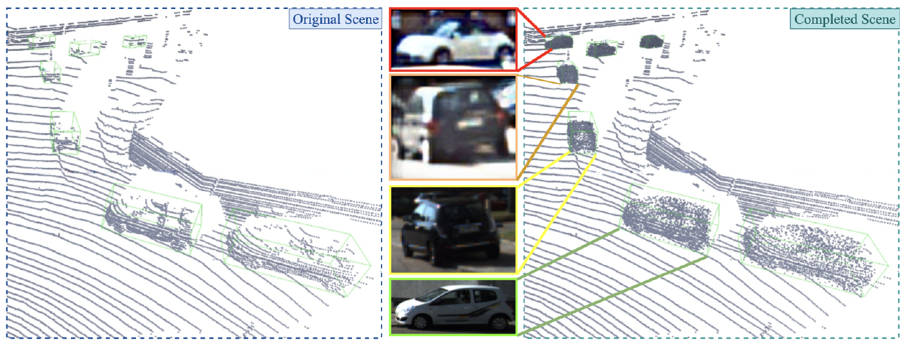
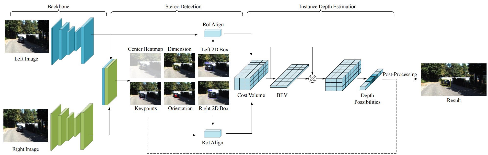
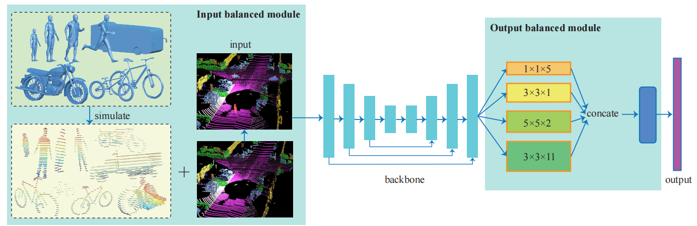

Selected Papers

See More and Know More: Zero-shot Point Cloud Segmentation via Multi-modal Visual Data
Yuhang Lu, Qi Jiang, Runnan Chen, Yuenan Hou, Xinge Zhu, Yuexin Ma
Accepted by
ICCV 2023
[Paper]

Human-centric Scene Understanding in 3D Large-scale Scenarios
Yiteng Xu, Peishan Cong, Yichen Yao, Runnan Chen, Yuenan Hou, Xinge Zhu, Xuming He, Jingyi Yu, Yuexin Ma
Accepted by
ICCV 2023
[Paper]

One Training for Multiple Deployments: Polar-based Adaptive BEV Perception for Autonomous Driving
Huitong Yang, Xuyang Bai, Xinge Zhu, Yuexin Ma
Accepted by
ICRA 2023
[Paper]

LiDAR-aid Inertial Poser: Large-scale Human Motion Capture by Sparse Inertial and LiDAR Sensors
Yiming Ren, Chengfeng Zhao, Yannan He, Peishan Cong, Han Liang, Jingyi Yu, Lan Xu, Yuexin Ma
Accepted by
TVCG 2023
[Paper]

CL3D: Unsupervised Domain Adaptation for Cross-LiDAR 3D Detection
Xidong Peng, Xinge Zhu, Yuexin Ma
Accepted by
AAAI 2023
[Paper]

Weakly Supervised 3D Multi-person Pose Estimation for Large-scale Scenes based on Monocular Camera and Single LiDAR
Peishan Cong, Yiteng Xu, Yiming Ren, Juze Zhang, Lan Xu, Jingya Wang, Jingyi Yu, Yuexin Ma
Accepted by
AAAI 2023
[Paper]

STCrowd: A Multimodal Dataset for Pedestrian Perception in Crowded Scenes
Peishan Cong, Xinge Zhu, Feng Qiao, Yiming Ren, Xidong Peng, Yuenan Hou, Lan Xu, Ruigang Yang, Dinesh Manocha, Yuexin Ma
Accepted by
CVPR 2022
[Paper]

Self-supervised Point Cloud Completion on Real Traffic Scenes via Scene-concerned Bottom-up Mechanism
Yiming Ren, Peishan Cong, Xinge Zhu, Yuexin Ma
Accepted by
ICME 2022
[Paper]

SIDE: Center-based Stereo 3D Detector with Structure-awareInstance Depth Estimation
Xidong Peng, Xinge Zhu, Tai Wang, Yuexin Ma
Accepted by
WACV 2022
[Paper]

Input-Output Balanced Framework for Long-tailed LiDAR Semantic Segmentation
Peishan Cong, Xinge Zhu, Yuexin Ma
Accepted by
ICME 2021
[Paper]